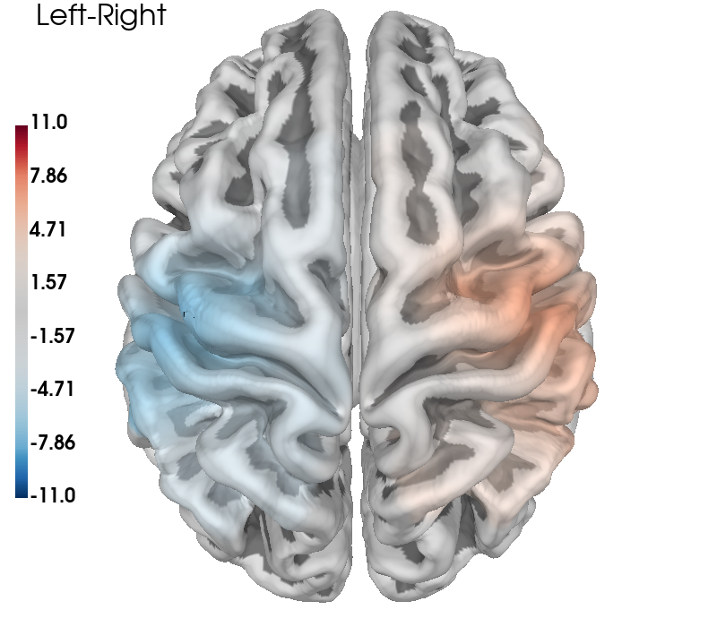

Note
Go to the end to download the full example code. or to run this example in your browser via Binder
Group Level GLM Analysis#
This is an example of a group level GLM based functional near-infrared spectroscopy (fNIRS) analysis in MNE-NIRS.
Individual level analysis of this data is described in the MNE fNIRS waveform tutorial and the MNE-NIRS fNIRS GLM tutorial So this example will skim over the individual level details and focus on the group level aspect of analysis. Here we describe how to process multiple measurements and summarise group level effects both as summary statistics and visually.
The data used in this example is available at this location. It is a finger tapping example and is briefly described below. The dataset contains 5 participants. The example dataset is in BIDS format and therefore already contains information about triggers, condition names, etc.
Note
This tutorial uses data stored using the BIDS format [1].
MNE-Python allows you to process fNIRS data that is not in BIDS format.
Simply modify the read_raw_ function to match your data type.
See data importing tutorial to learn how
to use your data with MNE-Python.
Note
Optodes were placed over the motor cortex using the standard NIRX motor montage, but with 8 short channels added (see their web page for details). To view the sensor locations run raw_intensity.plot_sensors(). A sound was presented to indicate which hand the participant should tap. Participants tapped their thumb to their fingers for 5s. Conditions were presented in a random order with a randomised inter stimulus interval.
# sphinx_gallery_thumbnail_number = 2
# Authors: Robert Luke <mail@robertluke.net>
#
# License: BSD (3-clause)
# Import common libraries
import matplotlib as mpl
# Import Plotting Library
import matplotlib.pyplot as plt
import numpy as np
import pandas as pd
import seaborn as sns
# Import StatsModels
import statsmodels.formula.api as smf
# Import MNE processing
from mne.preprocessing.nirs import beer_lambert_law, optical_density
# Import MNE-BIDS processing
from mne_bids import BIDSPath, get_entity_vals, read_raw_bids
from mne_nirs.channels import get_long_channels, get_short_channels, picks_pair_to_idx
from mne_nirs.datasets import fnirs_motor_group
from mne_nirs.experimental_design import make_first_level_design_matrix
from mne_nirs.io.fold import fold_channel_specificity
# Import MNE-NIRS processing
from mne_nirs.statistics import run_glm, statsmodels_to_results
from mne_nirs.visualisation import plot_glm_group_topo, plot_glm_surface_projection
Set up directories#
First we will define where the raw data is stored. We will analyse a
BIDS dataset. This ensures we have all the metadata we require
without manually specifying the trigger names etc.
We first define where the root directory of our dataset is.
In this example we use the example dataset fnirs_motor_group.
root = fnirs_motor_group.data_path()
print(root)
/home/circleci/mne_data/fNIRS-motor-group
And as we are using MNE-BIDS we can create a BIDSPath object. This class helps to handle all the path wrangling. We inform the software that we are analysing nirs data that is saved in the snirf format.
dataset = BIDSPath(
root=root, task="tapping", datatype="nirs", suffix="nirs", extension=".snirf"
)
print(dataset.directory)
/home/circleci/mne_data/fNIRS-motor-group/nirs
For example we can automatically query the subjects, tasks, and sessions.
subjects = get_entity_vals(root, "subject")
print(subjects)
['01', '02', '03', '04', '05']
Define individual analysis#
First we define the analysis that will be applied to each file. This is a GLM analysis as described in the individual GLM tutorial, so this example will skim over the individual level details.
The analysis extracts a response estimate for each channel, each region of interest, and computes a contrast between left and right finger tapping. We return the raw object and data frames for the computed results. Information about channels, triggers and their meanings are stored in the BIDS structure and are automatically obtained when importing the data.
Here we also resample to a 0.3 Hz sample rate just to speed up the example and use less memory, resampling to 0.6 Hz is a better choice for full analyses.
Note
The nilearn library does not allow backslash characters in the condition name. So we must replace the backslash with an underscore to ensure the GLM computation is successful. Hopefully future versions of MNE-NIRS will automatically handle these characters, see mne-tools/mne-nirs#420 for more information. In the meantime use the following code to replace the illegal characters.
def individual_analysis(bids_path, ID):
raw_intensity = read_raw_bids(bids_path=bids_path, verbose=False)
# Delete annotation labeled 15, as these just signify the experiment start and end.
raw_intensity.annotations.delete(raw_intensity.annotations.description == "15.0")
# sanitize event names
raw_intensity.annotations.description[:] = [
d.replace("/", "_") for d in raw_intensity.annotations.description
]
# Convert signal to haemoglobin and resample
raw_od = optical_density(raw_intensity)
raw_haemo = beer_lambert_law(raw_od, ppf=0.1)
raw_haemo.resample(0.3)
# Cut out just the short channels for creating a GLM repressor
sht_chans = get_short_channels(raw_haemo)
raw_haemo = get_long_channels(raw_haemo)
# Create a design matrix
design_matrix = make_first_level_design_matrix(raw_haemo, stim_dur=5.0)
# Append short channels mean to design matrix
design_matrix["ShortHbO"] = np.mean(
sht_chans.copy().pick(picks="hbo").get_data(), axis=0
)
design_matrix["ShortHbR"] = np.mean(
sht_chans.copy().pick(picks="hbr").get_data(), axis=0
)
# Run GLM
glm_est = run_glm(raw_haemo, design_matrix)
# Define channels in each region of interest
# List the channel pairs manually
left = [[4, 3], [1, 3], [3, 3], [1, 2], [2, 3], [1, 1]]
right = [[8, 7], [5, 7], [7, 7], [5, 6], [6, 7], [5, 5]]
# Then generate the correct indices for each pair
groups = dict(
Left_Hemisphere=picks_pair_to_idx(raw_haemo, left, on_missing="ignore"),
Right_Hemisphere=picks_pair_to_idx(raw_haemo, right, on_missing="ignore"),
)
# Extract channel metrics
cha = glm_est.to_dataframe()
# Compute region of interest results from channel data
roi = glm_est.to_dataframe_region_of_interest(
groups, design_matrix.columns, demographic_info=True
)
# Define left vs right tapping contrast
contrast_matrix = np.eye(design_matrix.shape[1])
basic_conts = dict(
[(column, contrast_matrix[i]) for i, column in enumerate(design_matrix.columns)]
)
contrast_LvR = basic_conts["Tapping_Left"] - basic_conts["Tapping_Right"]
# Compute defined contrast
contrast = glm_est.compute_contrast(contrast_LvR)
con = contrast.to_dataframe()
# Add the participant ID to the dataframes
roi["ID"] = cha["ID"] = con["ID"] = ID
# Convert to uM for nicer plotting below.
cha["theta"] = [t * 1.0e6 for t in cha["theta"]]
roi["theta"] = [t * 1.0e6 for t in roi["theta"]]
con["effect"] = [t * 1.0e6 for t in con["effect"]]
return raw_haemo, roi, cha, con
Run analysis on all participants#
Next we loop through the five measurements and run the individual analysis on each. We append the individual results in to a large dataframe that will contain the results from all measurements. We create a group dataframe for the region of interest, channel level, and contrast results.
df_roi = pd.DataFrame() # To store region of interest results
df_cha = pd.DataFrame() # To store channel level results
df_con = pd.DataFrame() # To store channel level contrast results
for sub in subjects: # Loop from first to fifth subject
# Create path to file based on experiment info
bids_path = dataset.update(subject=sub)
# Analyse data and return both ROI and channel results
raw_haemo, roi, channel, con = individual_analysis(bids_path, sub)
# Append individual results to all participants
df_roi = pd.concat([df_roi, roi], ignore_index=True)
df_cha = pd.concat([df_cha, channel], ignore_index=True)
df_con = pd.concat([df_con, con], ignore_index=True)
Reading 0 ... 23238 = 0.000 ... 2974.464 secs...
Reading 0 ... 18877 = 0.000 ... 2416.256 secs...
Reading 0 ... 18874 = 0.000 ... 2415.872 secs...
Reading 0 ... 23120 = 0.000 ... 2959.360 secs...
Reading 0 ... 23006 = 0.000 ... 2944.768 secs...
Visualise Individual results#
First we visualise the results from each individual to ensure the data values look reasonable. Here we see that we have data from five participants, we plot just the HbO values and observe they are in the expect range. We can already see that the control condition is always near zero, and that the responses look to be contralateral to the tapping hand.
grp_results = df_roi.query("Condition in ['Control', 'Tapping_Left', 'Tapping_Right']")
grp_results = grp_results.query("Chroma in ['hbo']")
sns.catplot(
x="Condition",
y="theta",
col="ID",
hue="ROI",
data=grp_results,
col_wrap=5,
errorbar=None,
palette="muted",
height=4,
s=10,
)

<seaborn.axisgrid.FacetGrid object at 0x7f47d4c72c50>
Compute group level results#
Next we use a linear mixed effects model to examine the relation between conditions and our response estimate (theta). Combinations of 3 fixed effects will be evaluated, ROI (left vs right), condition (control, tapping/left, tapping/right), and chromophore (HbO, HbR). With a random effect of subject. Alternatively, you could export the group dataframe (df_roi.to_csv()) and analyse in your favorite stats program.
We do not explore the modeling procedure in depth here as topics such model selection and examining residuals are beyond the scope of this example (see relevant literature). Alternatively, we could use a robust linear model by using the code roi_model = rlm(‘theta ~ -1 + ROI:Condition:Chroma’, grp_results).fit().
grp_results = df_roi.query("Condition in ['Control','Tapping_Left', 'Tapping_Right']")
roi_model = smf.mixedlm(
"theta ~ -1 + ROI:Condition:Chroma", grp_results, groups=grp_results["ID"]
).fit(method="nm")
roi_model.summary()
/home/circleci/python_env/lib/python3.10/site-packages/statsmodels/regression/mixed_linear_model.py:2237: ConvergenceWarning: The MLE may be on the boundary of the parameter space.
warnings.warn(msg, ConvergenceWarning)
Second level analysis with covariates#
It is simple to extend these models to include covariates. This dataset is small, so including additional factors may not be appropriate. However, for instructional purpose, we will include a covariate of gender. There are 3 females and 2 males in this dataset. Also, for instructional purpose, we modify the model above to only explore the difference between the two tapping conditions in the hbo signal in the right hemisphere.
From the model result we observe that hbo responses in the right hemisphere are smaller when the right hand was used (as expected for these contralaterally dominant responses) and there is no significant effect of gender.
grp_results = df_roi.query("Condition in ['Tapping_Left', 'Tapping_Right']")
grp_results = grp_results.query("Chroma in ['hbo']")
grp_results = grp_results.query("ROI in ['Right_Hemisphere']")
roi_model = smf.mixedlm(
"theta ~ Condition + Sex", grp_results, groups=grp_results["ID"]
).fit(method="nm")
roi_model.summary()
Visualise group results#
Now we can summarise the output of the second level model. This figure shows that the control condition has small responses that are not significantly different to zero for both HbO and HbR in both hemispheres. Whereas clear significant responses are show for the two tapping conditions. We also observe the the tapping response is larger in the contralateral hemisphere. Filled symbols represent HbO, unfilled symbols represent HbR.
# Regenerate the results from the original group model above
grp_results = df_roi.query("Condition in ['Control','Tapping_Left', 'Tapping_Right']")
roi_model = smf.mixedlm(
"theta ~ -1 + ROI:Condition:Chroma", grp_results, groups=grp_results["ID"]
).fit(method="nm")
df = statsmodels_to_results(roi_model)
sns.catplot(
x="Condition",
y="Coef.",
hue="ROI",
data=df.query("Chroma == 'hbo'"),
errorbar=None,
palette="muted",
height=4,
s=10,
)

/home/circleci/python_env/lib/python3.10/site-packages/statsmodels/regression/mixed_linear_model.py:2237: ConvergenceWarning: The MLE may be on the boundary of the parameter space.
warnings.warn(msg, ConvergenceWarning)
<seaborn.axisgrid.FacetGrid object at 0x7f47d48fdf00>
Group topographic visualisation#
We can also view the topographic representation of the data (rather than the ROI summary above). Here we just plot the oxyhaemoglobin for the two tapping conditions. First we compute the mixed effects model for each channel (rather than region of interest as above). Then we pass these results to the topomap function.
fig, axes = plt.subplots(
nrows=2, ncols=2, figsize=(10, 10), gridspec_kw=dict(width_ratios=[1, 1])
)
# Cut down the dataframe just to the conditions we are interested in
ch_summary = df_cha.query("Condition in ['Tapping_Left', 'Tapping_Right']")
ch_summary = ch_summary.query("Chroma in ['hbo']")
# Run group level model and convert to dataframe
ch_model = smf.mixedlm(
"theta ~ -1 + ch_name:Chroma:Condition", ch_summary, groups=ch_summary["ID"]
).fit(method="nm")
ch_model_df = statsmodels_to_results(ch_model)
# Plot the two conditions
plot_glm_group_topo(
raw_haemo.copy().pick(picks="hbo"),
ch_model_df.query("Condition in ['Tapping_Left']"),
colorbar=False,
axes=axes[0, 0],
vlim=(0, 20),
cmap=mpl.cm.Oranges,
)
plot_glm_group_topo(
raw_haemo.copy().pick(picks="hbo"),
ch_model_df.query("Condition in ['Tapping_Right']"),
colorbar=True,
axes=axes[0, 1],
vlim=(0, 20),
cmap=mpl.cm.Oranges,
)
# Cut down the dataframe just to the conditions we are interested in
ch_summary = df_cha.query("Condition in ['Tapping_Left', 'Tapping_Right']")
ch_summary = ch_summary.query("Chroma in ['hbr']")
# Run group level model and convert to dataframe
ch_model = smf.mixedlm(
"theta ~ -1 + ch_name:Chroma:Condition", ch_summary, groups=ch_summary["ID"]
).fit(method="nm")
ch_model_df = statsmodels_to_results(ch_model)
# Plot the two conditions
plot_glm_group_topo(
raw_haemo.copy().pick(picks="hbr"),
ch_model_df.query("Condition in ['Tapping_Left']"),
colorbar=False,
axes=axes[1, 0],
vlim=(-10, 0),
cmap=mpl.cm.Blues_r,
)
plot_glm_group_topo(
raw_haemo.copy().pick(picks="hbr"),
ch_model_df.query("Condition in ['Tapping_Right']"),
colorbar=True,
axes=axes[1, 1],
vlim=(-10, 0),
cmap=mpl.cm.Blues_r,
)

<Axes: title={'center': 'Tapping_Right'}>
Contrasts#
Finally we can examine the difference between the left and right hand tapping conditions by viewing the contrast results in a topographic representation.
fig, axes = plt.subplots(nrows=1, ncols=1, figsize=(6, 6))
con_summary = df_con.query("Chroma in ['hbo']")
# Run group level model and convert to dataframe
con_model = smf.mixedlm(
"effect ~ -1 + ch_name:Chroma", con_summary, groups=con_summary["ID"]
).fit(method="nm")
con_model_df = statsmodels_to_results(
con_model, order=raw_haemo.copy().pick(picks="hbo").ch_names
)
plot_glm_group_topo(
raw_haemo.copy().pick(picks="hbo"), con_model_df, colorbar=True, axes=axes
)
/home/circleci/python_env/lib/python3.10/site-packages/statsmodels/regression/mixed_linear_model.py:2237: ConvergenceWarning: The MLE may be on the boundary of the parameter space.
warnings.warn(msg, ConvergenceWarning)
<Axes: title={'center': 'Contrast'}>
Or we can view only the left hemisphere for the contrast. And set all channels that dont have a significant response to zero.
plot_glm_group_topo(
raw_haemo.copy().pick(picks="hbo").pick(picks=range(10)),
con_model_df,
colorbar=True,
threshold=True,
)
Reducing GLM results to match MNE data
<Axes: title={'center': 'Contrast'}>
Cortical Surface Projections#
The topographic plots above can sometimes be difficult to interpret with respect to the underlying cortical locations. It is also possible to present the data by projecting the channel level GLM values to the nearest cortical surface. This can make it easier to understand the spatial aspects of your data. Note however, that this is not a complete forward model with photon migration simulations. In the figure below we project the group results from the two conditions to the cortical surface, and also present the contrast results in the same fashion. As in the topo plots above you can see that the activity is predominately contralateral to the side of finger tapping.
# Generate brain figure from data
clim = dict(kind="value", pos_lims=(0, 8, 11))
brain = plot_glm_surface_projection(
raw_haemo.copy().pick("hbo"),
con_model_df,
clim=clim,
view="dorsal",
colorbar=True,
size=(800, 700),
)
brain.add_text(0.05, 0.95, "Left-Right", "title", font_size=16, color="k")
# Run model code as above
clim = dict(kind="value", pos_lims=(0, 11.5, 17))
for idx, cond in enumerate(["Tapping_Left", "Tapping_Right"]):
# Run same model as explained in the sections above
ch_summary = df_cha.query("Condition in [@cond]")
ch_summary = ch_summary.query("Chroma in ['hbo']")
ch_model = smf.mixedlm(
"theta ~ -1 + ch_name", ch_summary, groups=ch_summary["ID"]
).fit(method="nm")
model_df = statsmodels_to_results(
ch_model, order=raw_haemo.copy().pick("hbo").ch_names
)
# Generate brain figure from data
brain = plot_glm_surface_projection(
raw_haemo.copy().pick("hbo"),
model_df,
clim=clim,
view="dorsal",
colorbar=True,
size=(800, 700),
)
brain.add_text(0.05, 0.95, cond, "title", font_size=16, color="k")
- 
Table of channel level results#
Sometimes a reviewer wants a long table of results per channel. This can be generated from the statistics dataframe.
ch_summary = df_cha.query("Condition in ['Tapping_Left', 'Tapping_Right']")
ch_summary = ch_summary.query("Chroma in ['hbo']")
# Run group level model and convert to dataframe
ch_model = smf.mixedlm(
"theta ~ -1 + ch_name:Chroma:Condition", ch_summary, groups=ch_summary["ID"]
).fit(method="nm")
# Here we can use the order argument to ensure the channel name order
ch_model_df = statsmodels_to_results(
ch_model, order=raw_haemo.copy().pick(picks="hbo").ch_names
)
# And make the table prettier
ch_model_df.reset_index(drop=True, inplace=True)
ch_model_df = ch_model_df.set_index(["ch_name", "Condition"])
ch_model_df
Relating Responses to Brain Landmarks#
It can be useful to understand what brain structures the measured response may have resulted from. Here we illustrate how to report the brain structures/landmarks that the source detector pair with the largest response was sensitive to.
First we determine the channel with the largest response.
Next, we query the fOLD dataset to determine the
brain landmarks that this channel is most sensitive to.
MNE-NIRS does not distribute the fOLD toolbox or the data
that they provide. See the Notes section of
mne_nirs.io.fold_channel_specificity() for more information.
largest_response_channel = ch_model_df.loc[ch_model_df["Coef."].idxmax()]
largest_response_channel
Coef. 13.375966
Std.Err. 2.603911
z 5.136876
P>|z| 0.0
[0.025 8.272395
0.975] 18.479537
Chroma hbo
Significant True
Name: (S5_D7 hbo, Tapping_Left), dtype: object
Next we use information from the fOLD toolbox to report the
channel specificity to different brain regions.
For licensing reasons, these files are not distributed with MNE-NIRS.
To set up your system to use the fOLD functions, see the Notes section of
mne_nirs.io.fold_channel_specificity().
raw_channel = raw_haemo.copy().pick(largest_response_channel.name[0])
fold_channel_specificity(raw_channel)[0]
We observe that the channel with the largest response to tapping had the greatest specificity to the Precentral Gyrus, which is the site of the primary motor cortex. This is consistent with the expectation for a finger tapping task.
Conclusion#
This example has demonstrated how to perform a group level analysis using a GLM approach. We observed the responses were evoked primarily contralateral to the hand of tapping and most likely originate from the primary motor cortex.
Total running time of the script: (0 minutes 36.423 seconds)
Estimated memory usage: 726 MB